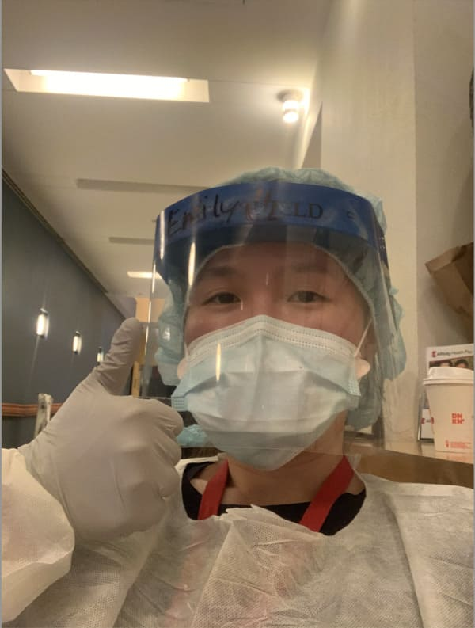
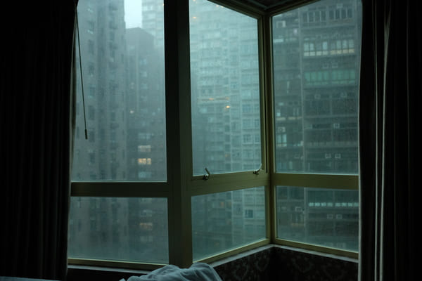
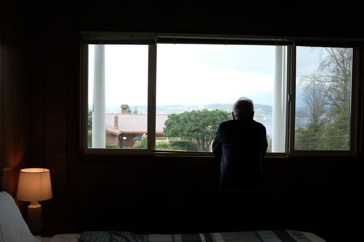

 Me during COVID-19 2020 working at a clinic in New York City.  Hotel window during COVID-19 quarantine in Admiralty, Hong Kong. Carlsbad field of flowers in Carlsbad, CA.  My dad looking out into a suburb in Seattle during Spring season.
 Emily Tsui
Emily Tsui